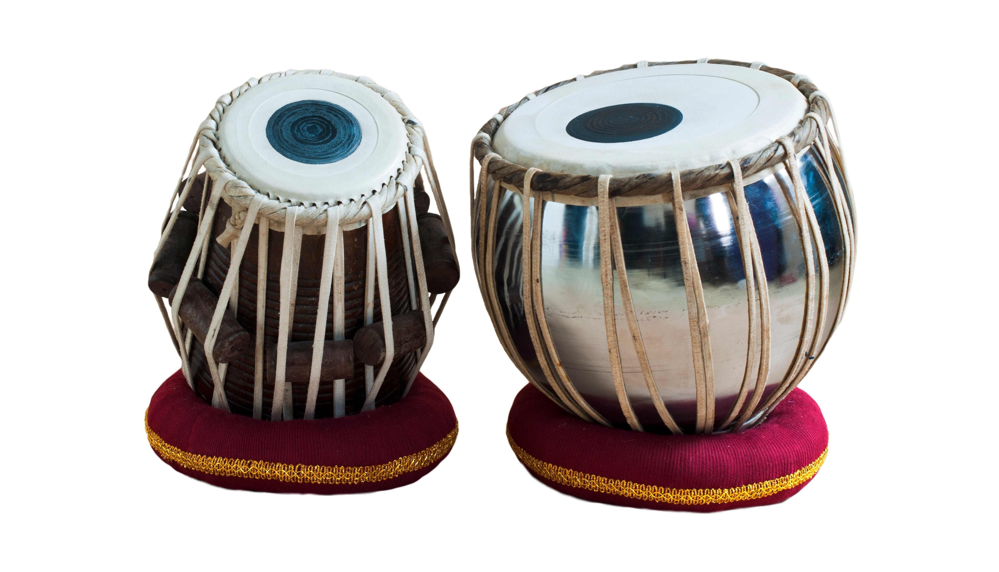

Automatic Detection & Classification of Tabla Talas
- Type
- Project
- Area
- Machine Learning, Audio
- Award
- First winner — TensorFlow Community Spotlight
- Code
- GitHub

This project develops a system that first detects a tabla tala from a mix (a song) of Indian or Carnatic classical music, then classifies the tala. A tala is a specific rhythmic pattern present across Indian classical music, and the tabla is the percussive accompanying instrument.